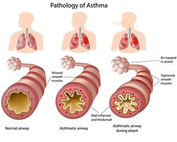

Exercise-induced bronchospasm

CAUSES
Rigorous physical activity and cold, dry air can trigger exercise-induced asthma. When you’re resting, you usually breathe through your nose. Your nose warms and moisturizes the air you breathe as it travels through your nostrils.
When you exercise, you breathe in through your mouth more often, and the air coming in remains cold and dry. If you have asthma, the bands of muscle around your airways react to the cold, dry air by constricting (becoming narrow).
SYMPTOMS
Symptoms of asthma triggered by exercising include:
- Coughing after running or exercising.
- Wheezing.
- Difficulty breathing. You may feel like it’s hard to push air out of your lungs.
- Tight feeling in the chest.
- Severe fatigue.
DIAGNOSIS
Your provider will ask about your symptoms, including when you have them and how long they last. After listening to your lungs, your provider will ask you to perform an activity that usually triggers your symptoms (such as running outside). Then your provider will measure your lung function with a spirometry test.
During spirometry, you exhale as much air as you can as fast as possible. You breathe into a tube attached to a machine called a spirometer. The machine measures how well your lungs work after exercise.
TREATMENTS
These medications include:
- Short-acting beta-agonist (SABA): These medications can relieve symptoms during an EIB episode. SABAs are a type of bronchodilator. They’re sometimes called rescue inhalers because you inhale (breathe in) the medicine, and it goes directly into your airways. SABAs can also prevent asthma symptoms if you take the medication about 15 minutes before exercise.
-
Long-acting beta-agonist (LABA): Like SABA drugs, these medications let air flow by relaxing muscles in the airways. LABAs can prevent an EIB episode if you inhale the medication about 30 minutes to an hour before you exercise. But they aren’t effective as rescue inhalers. They won’t reverse symptoms once they’ve started.
Inhaled corticosteroids: These drugs reduce swelling in the airways to increase airflow.
-
Leukotriene modifiers: You take this medication by mouth to prevent the airways from becoming inflamed. Talk to your provider about the side effects of these drugs. Some people experience behavior changes and mood swings.
-
Mast cell stabilizers: Taking this medication about 15 minutes before exercise can prevent symptoms. You inhale this medication through a nebulizer, a machine that turns liquid medicine into tiny droplets that you breathe in.